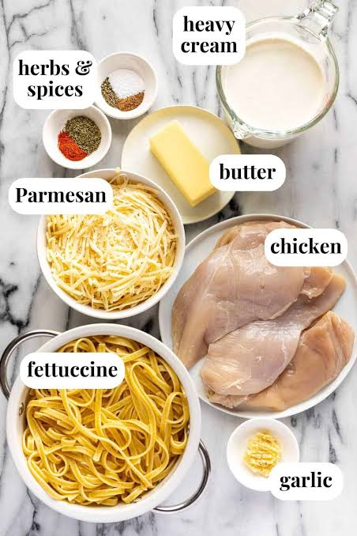
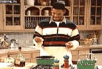

Chicken Fettuccine Alfredo
Ingredients

- 1 lb fettuccine pasta
- 2 tbsp butter
- 2 tbsp olive oil
- 4 cloves garlic, minced
- 1 lb boneless, skinless chicken breasts, cut into bite-sized pieces
- 1 cup heavy cream
- 1 cup grated Parmesan cheese
- Salt and pepper to taste
- Chopped parsley for garnish (optional)
It's a lot of work.... I know it's scary but trust the process!
Please cook with caution.

Follow these steps to enjoy your homemade Chicken Fettuccine Alfredo!
Instructions
- Cook the fettuccine pasta according to the package instructions. Drain and set aside.
- In a large skillet, heat the butter and olive oil over medium heat. Add the minced garlic and sauté for about 1 minute until fragrant.
- Add the chicken pieces to the skillet and cook until they are no longer pink in the center, about 5-7 minutes. Season with salt and pepper to taste.
- Reduce the heat to low and pour in the heavy cream. Stir well to combine with the chicken.
- Add the grated Parmesan cheese to the skillet and stir until the cheese is melted and the sauce is smooth.
- Add the cooked fettuccine pasta to the skillet and toss to coat it evenly with the sauce.
- Garnish with chopped parsley if desired, and serve hot.
And voilà! Your taste buds will THANK you! Click Here to see more delicious recipes.